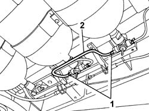
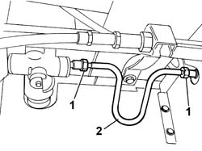
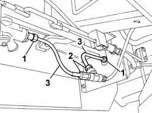

1042A50 PIPE (1) CONNECTING CNG RECHARGING SYSTEM SOLENOIDS - R R
- Path
- Procedures > 10 ENGINE UNIT > 1042 METHANE GAS CANNISTER AND TUBES > 1042A METHANE GAS CANNISTER AND TUBES FOR RE-CHARGING > 1042A50 PIPE (1) CONNECTING CNG RECHARGING SYSTEM SOLENOIDS - R R
- Kind
- repair procedure (removal / refitting; the operation number is the code)
- Applies to
- engines: 2.0 16V; all production periods
- Interactive page
- https://sloeber94.github.io/elrnDB-fDct/en/#/244000766
Applies to: engines: 2.0 16V; all production periods
 Removing
Removing
 Refitting
RefittingPosition the vehicle on the lift.
Proceed with draining the high pressure circuit following the instructions in the specific operation:
Op. 1042A02 METHANE SYSTEM SAFETY SET UP
Op. 1042E60 CNG CYLINDER UNIT PROTECTION SEAL - R R
Disconnect the electrical connections for the cut out solenoid valves on the canisters.
1. Undo the connectors from the solenoid valves on the canister.
2. Remove the CNG solenoid valve connecting pipe.

Applies to: engines: 2.0 16V; all production periods
Refitting
RemovingFit the CNG solenoid valve connecting pipe and tighten the connectors on the canister solenoid valves.
Value daNm | Fastening | Component | Ø | |
|---|---|---|---|---|
- | 2.8 | Connector | - | - |
Connect the electrical connections for the cut out solenoid valves on the canisters.
Move the CNG cut-off solenoids to open position by hand and check system is efficient.
Op. 1042E60 CNG CYLINDER UNIT PROTECTION SEAL - R R
Remove the vehicle from the lift.
Applies to: engines: 2.0 16V; all production periods; only with equipment: Upgraded autonomy
Removing
RefittingPosition the vehicle on the lift.
Proceed with draining the high pressure circuit following the instructions in the specific operation:
Op. 1042A02 METHANE SYSTEM SAFETY SET UP
Disconnect the electrical connections for the cut out solenoid valves on the canisters.
Applies to: engines: 2.0 16V; all production periods; only with equipment: Upgraded autonomy
To dismantle the connecting pipe between the front canister and the centre canister, proceed as described below.
1. Undo the connectors for the solenoid valve on the canister.
2. Remove the CNG solenoid valve connecting pipe.

Applies to: engines: 2.0 16V; all production periods; only with equipment: Upgraded autonomy
To dismantle the connecting pipe between the centre canister and the rear canister, proceed as described below.
1. Undo the connector for the solenoid valve on the canister.
2. Undo the pipe connector for the three-way connector.
3. Remove the CNG solenoid valve connecting pipe involved.

Applies to: engines: 2.0 16V; all production periods; only with equipment: Upgraded autonomy
Refitting
RemovingTo assemble the connecting pipe between the centre canister and the rear canister, proceed as described below.
Position the CNG solenoid valve connecting pipe involved.
Tighten the pipe connector to the three-way connector.
Value daNm | Fastening | Component | Ø | |
|---|---|---|---|---|
- | 2.8 | Connector | - | - |
Tighten the connector for the solenoid valve on the canister.
Value daNm | Fastening | Component | Ø | |
|---|---|---|---|---|
- | 2.8 | Connector | - | - |
Applies to: engines: 2.0 16V; all production periods; only with equipment: Upgraded autonomy
To assemble the connecting pipe between the front canister and the centre canister, proceed as described below.
Position the CNG solenoid valve connecting pipe.
Tighten the connectors for the solenoid valve on the canister.
Value daNm | Fastening | Component | Ø | |
|---|---|---|---|---|
- | 2.8 | Connector | - | - |
Applies to: engines: 2.0 16V; all production periods; only with equipment: Upgraded autonomy
Connect the electrical connections for the cut out solenoid valves on the canisters.
Move the CNG cut-off solenoids to open position by hand and check system is efficient.
Remove the vehicle from the lift.